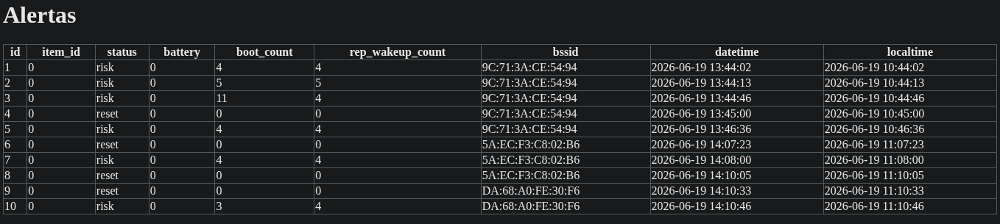
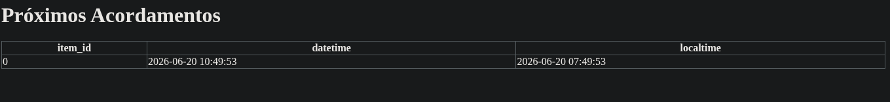
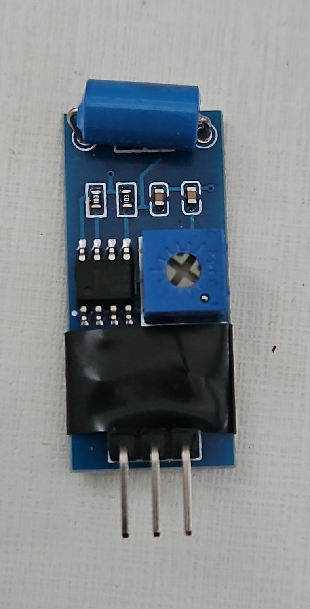
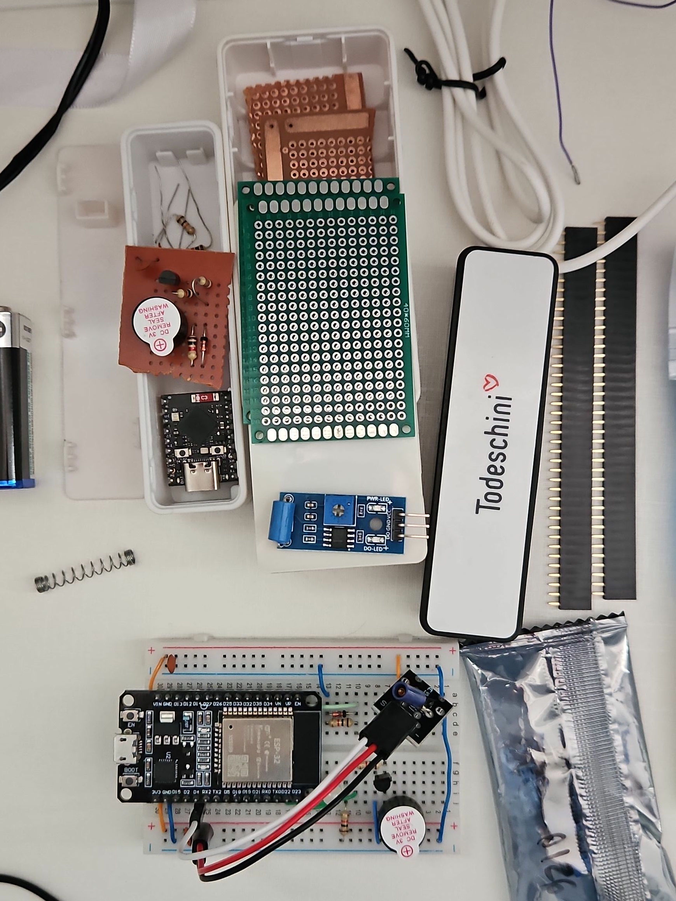
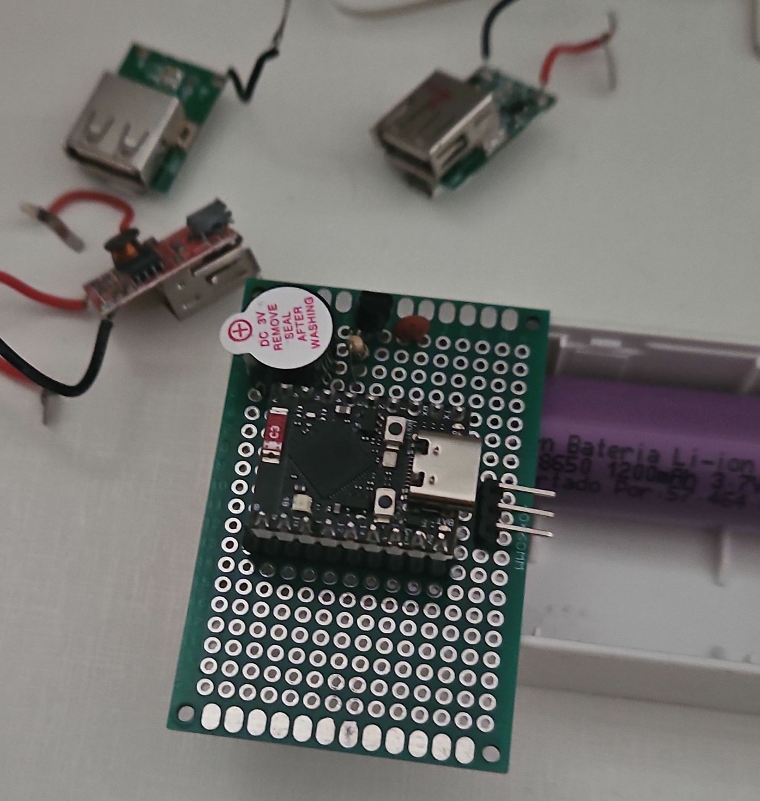
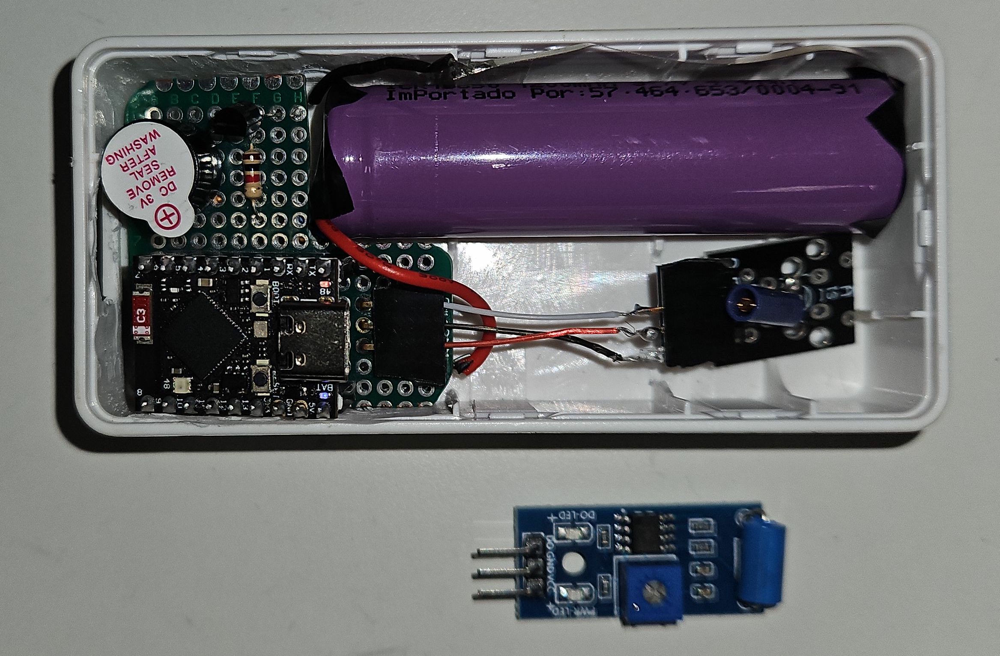
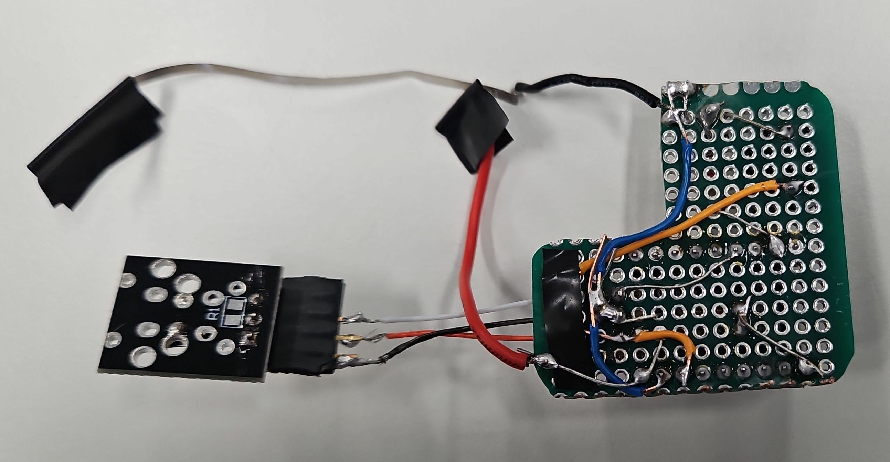

Foi implementado o envio do BSSID da conexão do microcontrolador, ou seja, o endereço MAC do Access Point a que ele está conectado via Wi-Fi. Isso ajuda a saber melhor a localização dos itens do inventário em redes com múltiplos Access Points. Foi também enviada separadamente a contagem de boot e de acordamentos repetidos, assim como foi implementado um divisor resistivo para medição da tensão da bateria.

Além disso, foi definido um intervalo de tempo para que o próximo acordamento do microcontrolador que fez uma requisição ao servidor seja sorteado dentro deste intervalo. Com isso, foi criada também uma tabela para se registrar o horário esperado para o acordamento de cada item.

Por fim, em todas as tabelas que apresentam datas é agora criada uma nova coluna com o fuso horário local, já que as datas são armazenadas em UTC-0.
Foi testado o módulo sensor de vibração SW-420, que possui um componente que altera a resistência ao ser movimentado, de forma que um CI comparador realiza a comparação de tensão em relação a um potenciômetro. Ele apresentou uma sensibilidade muito boa, que pode ser ajustada pelo potenciômetro. A desvantagem em relação ao sensor de mola (KY-002) é que ele gasta mais energia por o circuito ficar sempre ligado, e também por ter dois LEDs que ficam ligados (a retirada deles seria uma melhoria futura).

Foi utilizada uma caixa de power bank para armazenar a placa e a bateria, de forma que não foi preciso realizar nenhuma compra ou impressão 3D, e possui um tamanho quase ideal para o protótipo.


Foi realizada a solda utilizando o mínimo espaço possível, de forma a caber na caixa. Por isso, ela foi bastante trabalhosa, precisando planejar bem a forma de rotear os fios. Posteriormente, a placa foi cortada com uma micro retífica da universidade. Foi também necessário utilizar esta ferramenta para remover alguns elementos internos da caixa que dificultavam o encaixe.
Na placa foi solda uma barra de pinos para ser possível alterar entre sensores. O sensor de mola não ficou solto o suficiente dentro da caixa para possuir uma sensibilidade boa, por isso o SW-40 foi o escolhido para se apresentar o projeto.


Foi realizado um teste de duração de um bateria alcalina usada (8.3/9V) e utilizando a placa de desenvolvimento DOIT ESP32 DevKit V1 (que não é pensada para economia de energia) para se medir um caso ruim de projeto. Com isso, foi deixado o microcontrolador em Deep Sleep pela maior parte do tempo para verificar quanto tempo duraria a bateria, com um resultado ruim de cerca de dois dias.
A bateria escolhida para o protótipo foi uma bateria de lítio CR18650, pois é facilmente encontrada, ser bastante utilizada para projetos embarcados, e por caber bem na caixa (já que o power bank utilizava este tipo de bateria). Por restrições de tempo, não foi possível medir a duração da bateria.